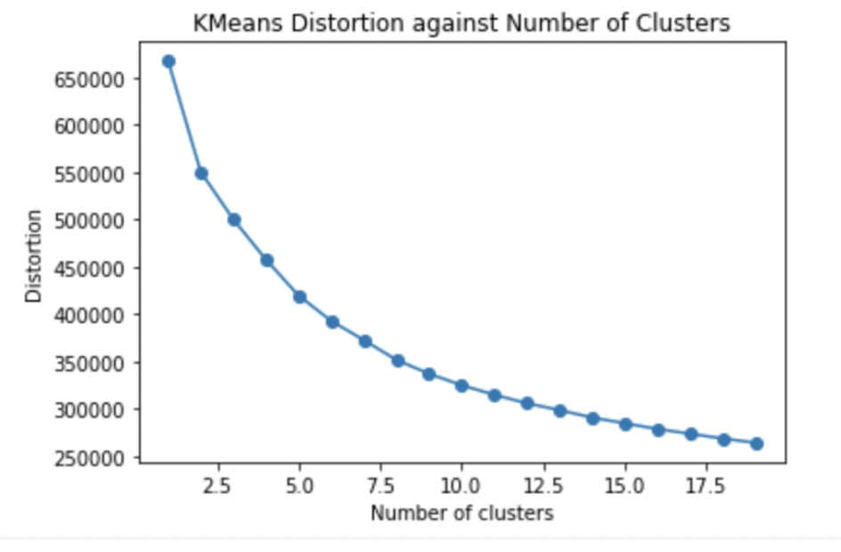
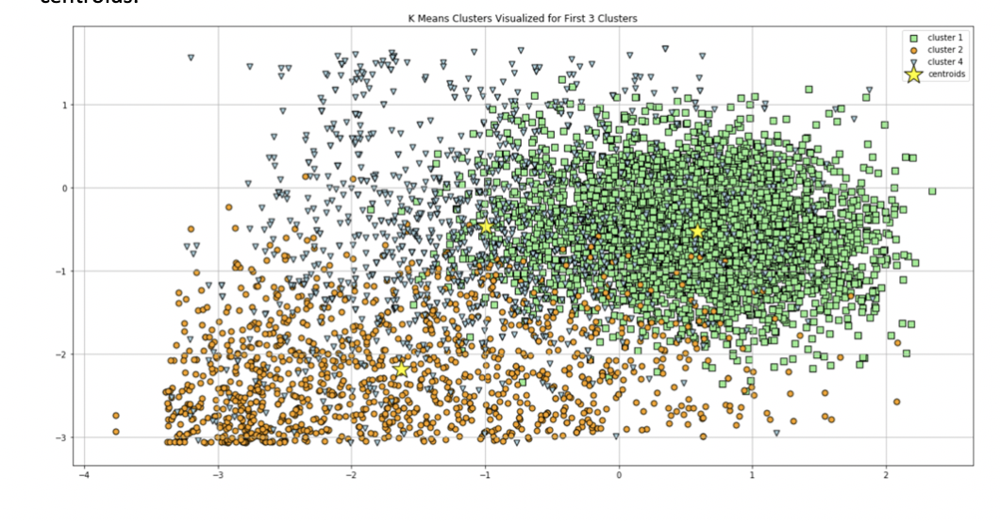

After thinking further about the nature of the playlist prediction model, we realized that disregarding the existing division of songs in the dataset into playlists could be a useful approach to begin categorizing them. While our logistic regression model maintained the data set’s division of songs into playlists as a way to define congruity between songs, we wanted to see if creating groups of songs independently of the playlists that they belong to in the given dataset could provide an entry-point into classification.
We figured that one person’s preference of playlist configuration could differ from another’s. For instance, one user could create playlists based on the seasons of a year and another could group songs into playlists based on the actual similarity between songs. Thus, we stopped thinking about song-classification as tied to the existing playlists in the given dataset and instead thought about how we would create our own groups of playlists.
To tackle this problem, we identified k-means clustering as an efficient model to explore this strategy. K-means clustering creates k clusters into which it divides the data set. In our case, we would create k clusters into which we would divide the all the songs in the dataset, regardless of which playlist they belong to in the given dataset. By doing this, we should theoretically create clusters of songs that are similar to each other. Consequently, when we want to suggest a new playlist to a user based on the user’s existing playlist, we would iterate over the songs in the user’s existing playlist and, for each song, select a song, randomly, from the cluster to which it belongs. A such, we would be suggesting a playlist with a similar distribution in song-type as the user’s existing playlist. By randomly selecting a song from the designated cluster, our model would include an element of randomness, which is useful in song-prediction as entropy in song-selection is what leads us to discover new songs that are similar to our existing tastes.
K-means clustering is an unsupervised learning algorithm, which means that we don’t have to create an y-values that should be classified. Thus, I begin by sampling a random playlist from the dataset that will act as the user’s ‘current’ playlist. After fitting the k-means clustering model, I will predict another playlist for the user based on this ‘current’ playlist.
To identify k, the number of clusters, we used the elbow method by measuring distortion. Distortion is the sum of the squared differences between the data points and the centroid of the corresponding cluster. The centroid is the center point of the cluster, around which the cluster’s data points are situated. The elbow method rendered the following distortion function:

We selected k=10 as our number of clusters since, although there is no one clear elbow, the distortion loss begins levelling out after that point. Before fitting the k means model, we standardized our data.
To check what the clusters look like, we plotted the first three clusters with their corresponding centroids:

Please note that it is difficult to plot the clusters on a two-dimensional plane since the clusters are based on multiple features. Thus, although it may seem as there is a lot of overlap between the clusters, the overlap would not be as big if the clusters were plotted on a multi-dimensional plane. The centroids are labelled as yellow stars.
We then used the previously sampled playlist and iterated over it and randomly selected songs from the corresponding clusters. Consequently, the user was predicted a new playlist.